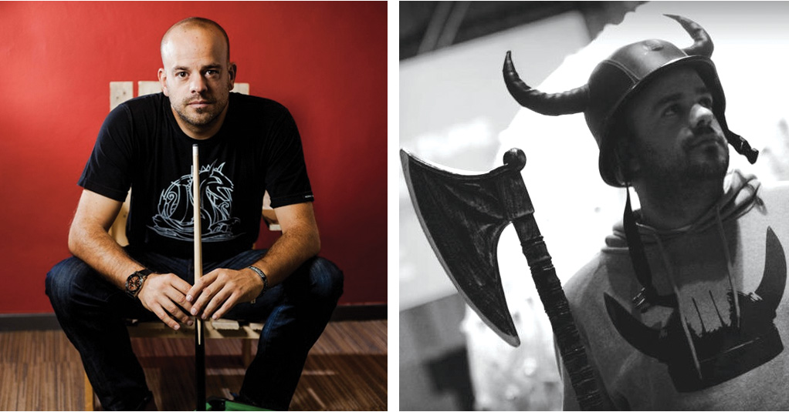

A Social Customer Service Crusade
Co-founded in 2008 by Frank Bekkers, Mobile Vikings is a mobile virtual network (an MVNO) – which purchases bulk access to network services at wholesale rates, passing along savings to its users (Vikings!) – based in Belgium.
Mobile Vikings – who in turn call their intrepid customers their “Vikings” – offers discounted tablet and smartphone SIM cards, which are delivered directly to their customers. Because there’s no brick and mortar shop and no sales people, Mobile Vikings can afford stream-lined prices and stellar customer service.
The Damn-the-Man MVNO, which boasts more than 175,000 members, has been using Sparkcentral for its customer service for two years now, championing low-cost, high-quality service across its brand and social media channels, especially @mobilevikingsbe.
"We find people who charge for basic things like walking and peeing and give them a kick in the shins. Free access to open communication a human right."*
Hans Similon, Chief Viking Evangelist says that as an MVNO, word of mouth is everything – there’s no juicy marketing or advertising budget – so customers are always at the center of Mobile Vikings’ operations.
“80% of our customers are found by other customers,” explains Similon. “We don’t do advertising, we believe in quality of service – and it’s through this service that we find new members. Vikings are dangerously viral. They tend to multiply when they meet. Happy Vikings breed new happy Vikings. That is what sets word of mouth marketing apart from regular marketing.”
At any given point every day, up to ten people are using Sparkcentral for customer care and social media across Mobile Vikings’ Twitter and Facebook channels. While there is a dedicated staff of nine solely dealing with customer support (including email and phone), Similon says any member of the “internal” Vikings staff can jump in and help – and they often do.
We really try to be a conversation company. For us, Sparkcentral is not a marketing tool, it’s a service tool.
Social Customer Care: Everybody Into the Pool!
Another element that sets Mobile Vikings apart is their top-to-bottom immersion in customer care – whether you’re the CEO or a new developer, you’re going to spend a full week at the help desk, learning the ins and outs of how to keep their Vikings smiling.
The DNA and the Viking feeling is very important,” says Similon. “CEO, CFO, CMO, I don’t care – they all start at the help desk … to listen and to learn what the concerns are of our Vikings. This way they can understand firsthand the work and effort that our help desk does every day to keep our Vikings happy.
"Helping others is our drive. Whenever someone has a question or problem we try to help him/her as well and as fast as we possibly can. Like the time we drove all the way to the other end of the country to deliver a SIM-card to an elderly lady."
It also guarantees consistency across the brand, which Similon explains is vital. “If a Viking has a question, they’ll get the same answer whether it’s phone, email, Twitter or Facebook. I think it’s important to speak in one voice. We don't want to distinguish our voice between the different channels.”
Mobile Vikings’ Rules of Social Media:
- Always be personal.
- Never lie. If you don’t know the answer, just say so.
- Never bash a competitor
While Similon says his agents should respond to their Vikings’ queries no matter where they reach out – “even if they want they can walk into the office and ask a question!” – he says that the larger the Viking membership grows, the more they flock to social media for answers.
“We get more and more questions on Facebook and Twitter,” says Similon. “The nice thing on Twitter and Facebook is if you have the same questions you can often see the answer – I think that’s one of the reasons that we’ve seen a drop in calls and emails – Vikings see it’s easier to ask questions on social media. It’s also nice to see their interactions between members.”
The Voice of the Viking
One of the Mobile Vikings’ strongest (and proudest) differentiators – in addition to great service and support – is their sense of humor. “I think we don’t take ourselves too seriously, but we take our Vikings seriously. We make crazy videos and put them online. And we like to surprise our Vikings from time to time!” Similon says a recent customer was thrilled with an “instant” solution to their problem and we’re so excited, they began tweeting about it. “So we said, ‘if you’re that happy with an instant solution, we’ll send you an instant soup’”! And they did. Instant curry to be exact.
"There's a huge return on happy."
Community Bred, Community Led
Mobile Vikings has a dedicated section of their website where you find all the #helpaviking tweets, the posts from Vikings to Vikings, asking for some help. From searches for a new drum kit to sponsors for a foot race, the Viking community takes care of its own. “Every Viking with an idea or a question for support, retweet, search for a query, anything – you can mention it with that hashtag and every week we choose one and then we “like” it on our Twitter and Facebook page.
Sparkcentral + Social Care = Fighting the Good Fight
Similon says that social customer care is collapsing the boundaries between customers and enterprises and ultimately brings people closer together. Companies need to make sure they’re ready for the future. Sparkcentral is flexible and very customer-oriented. You can access and use it from everywhere – wherever you have an internet connection you can help your customers. If you want to use social media for a customer service ... for me there is no other option than Sparkcentral.